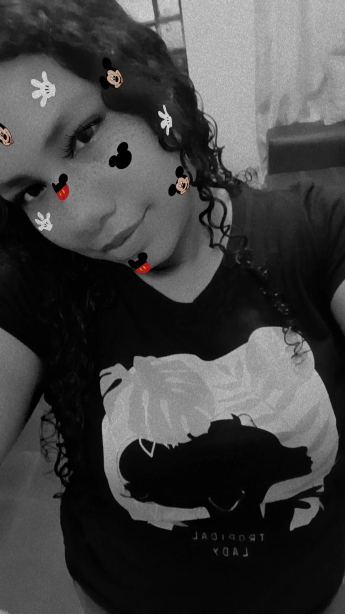
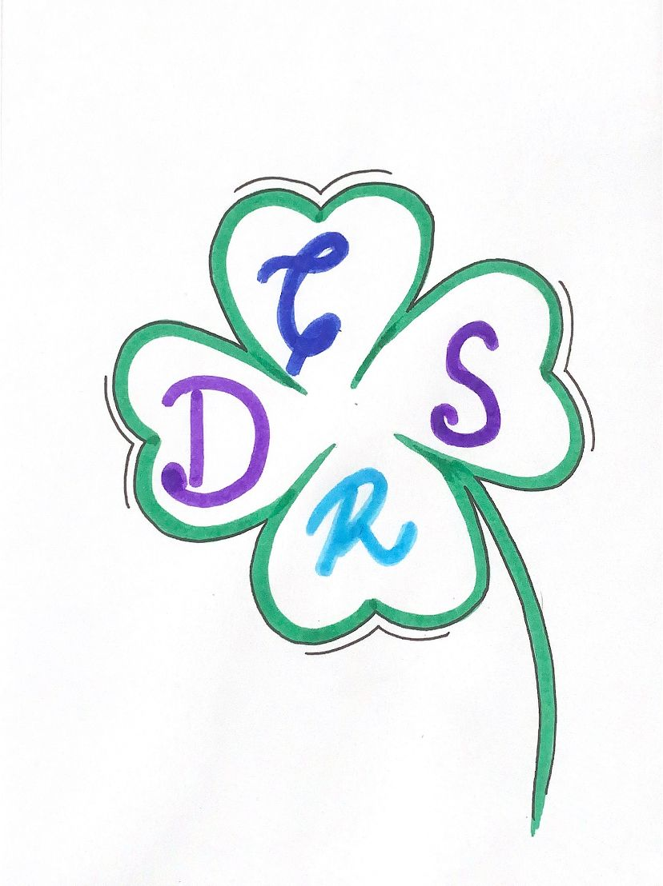

| 
| Me llamo Raiza Manzo, tengo 22, estoy estudiando comunicación audiovisual multimedia en el instituto Touluse Lautrec, mi pasatiempo favorito es viajar, salir con amigos, bailar y decoraciones tematicas, actualmente estoy en el proceso de creación de una marca de ropadeportiva para chicas. |
 |
Estudio comunicación audiovisual multimedia en el instituto Touluse Lautrec, estoy cursando el séptimo ciclo con algunos cursos de quinto, pero nada me para porque me faltan nueve cursos para terminar la carrera, aun no tengo prácticas como tal pero estoy en ese proceso, he participado en las prácticas que me brinda el instituto y he logrado sacarlas adelante obteniendo veinte de calificación con diploma a excelencia, me gustaría dedicarme a todo lo relacionado con la producción o en todo caso dirección de arte ya que me gusta mucho la decoración, uno de mis proyectos a mediano plazo es poder ayudar a mi papá en nuestra empresa familiar para de esa forma hacerla más conocida. |
|  |
En este caso nosotros dibujamos un trébol, ya que representa la suerte y el éxito, en cada hoja colocamos nuestras iniciales para que nos puedan acompañar y congregar la unión entre nosotros. |